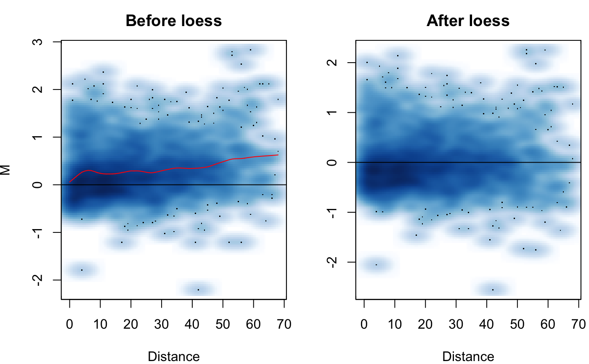
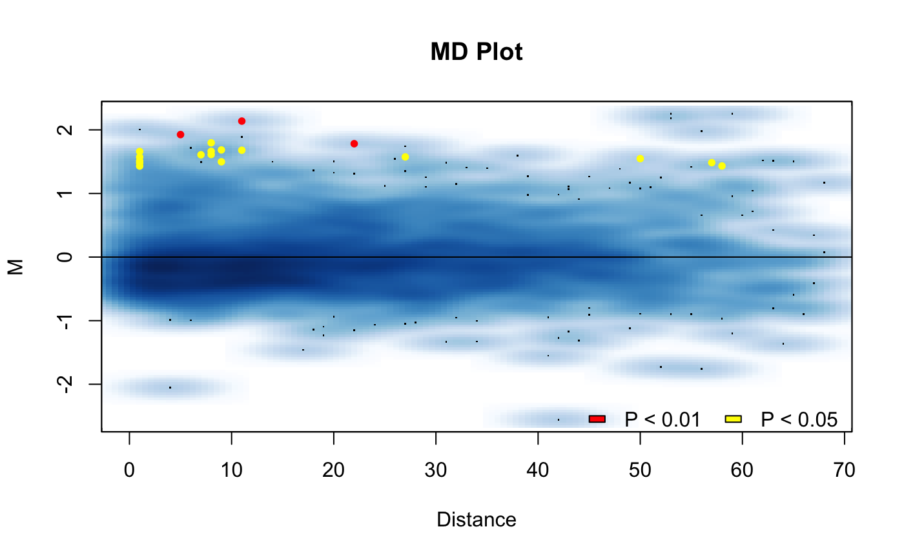
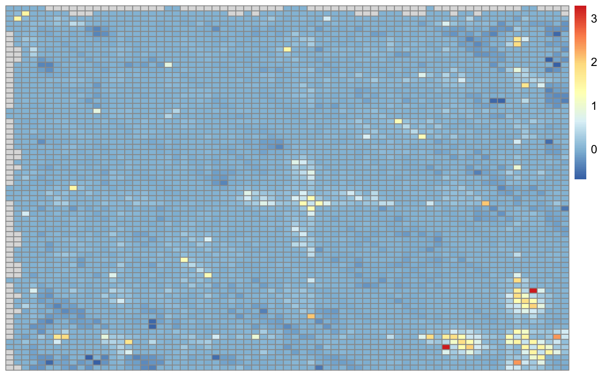

R/visualize_pvals.R
visualize_pvals.RdFunction to visualize p-values from HiCcompare results
visualize_pvals(hic.table, alpha = NA, adj.p = TRUE)
| hic.table | A hic.table object that has been normalized and has had differences detected. |
|---|---|
| alpha | The alpha level at which you will call a p-value significant. If this is set to a numeric value then any p-values >= alpha will be set to 1 for the visualization in the heatmap. Defaults to NA for visualization of all p-values. |
| adj.p | Logical, Should the multiple testing corrected p-values be used (TRUE) or the raw p-values (FALSE)? |
A heatmap
The goal of this function is to visualize where in the Hi-C matrix the differences are occuring between two experimental conditions. The function will produce a heatmap of the -log10(p-values) * sign(adj.M) to visualize where the significant differences between the datasets are occuring on the genome.
# Create hic.table object using included Hi-C data in sparse upper triangular # matrix format data('HMEC.chr22') data('NHEK.chr22') hic.table <- create.hic.table(HMEC.chr22, NHEK.chr22, chr = 'chr22') # Plug hic.table into hic_loess() result <- hic_loess(hic.table, Plot = TRUE)#>#>#>#>#>#>